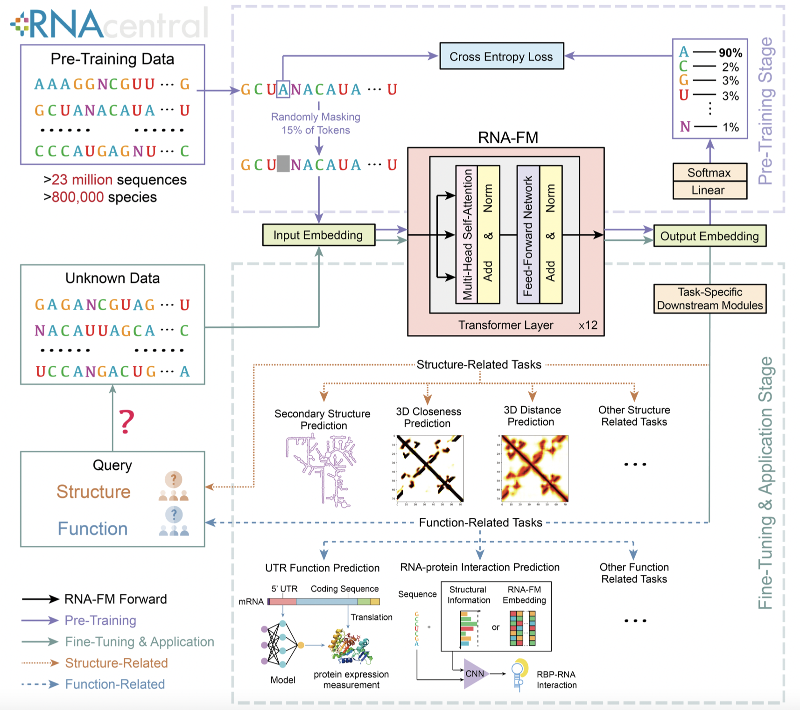
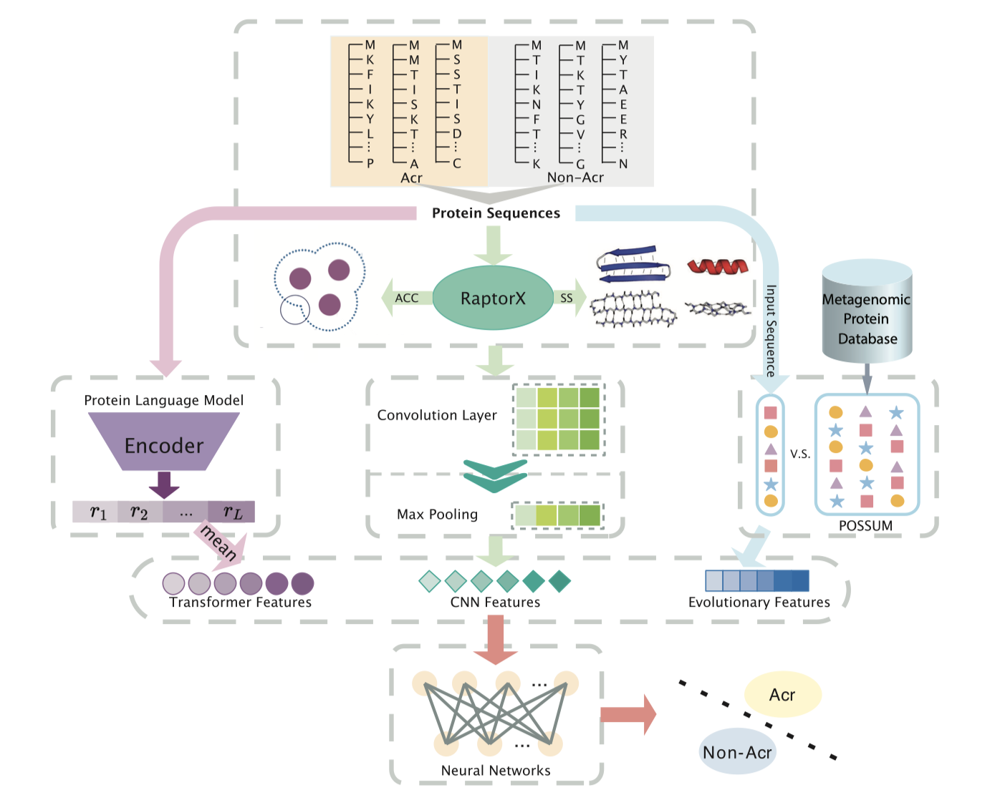
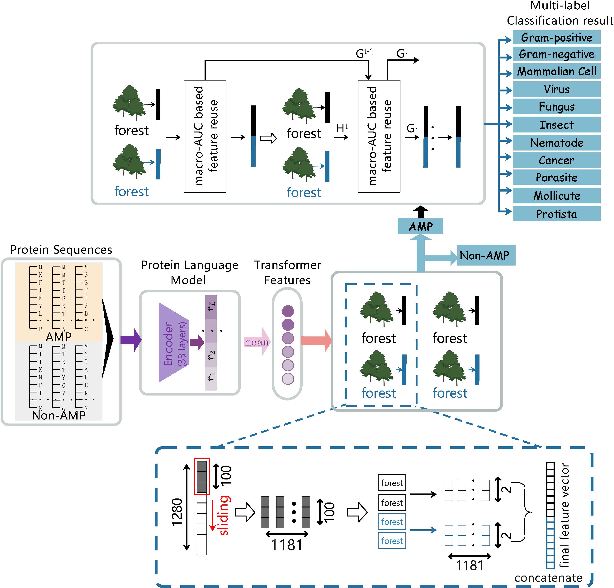
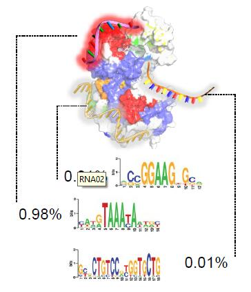
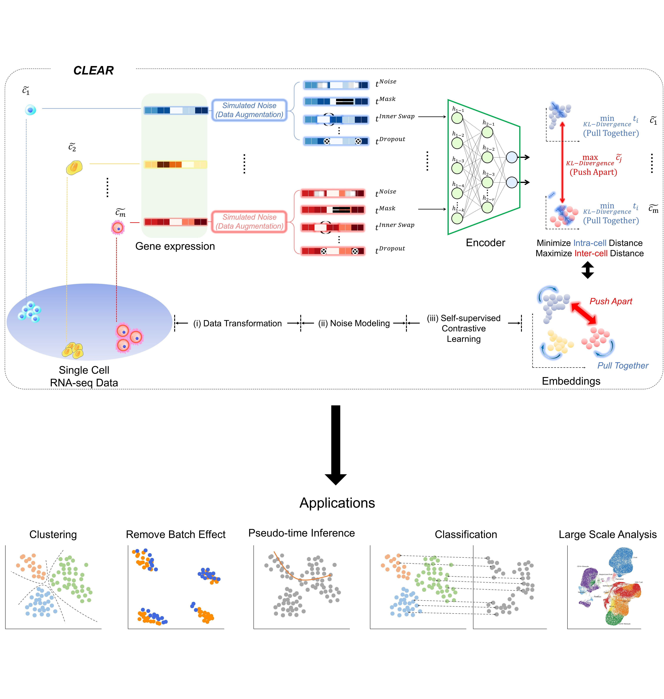
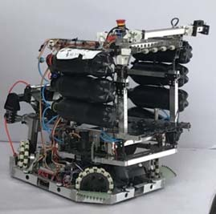

|
MSc. in Computer Science Candidate |
|
I am currently working at the intersection between Deep Learning and Medical Imaging; I have also worked on Reinforcement Learning related research. My research could be categorized into: - Computational Methodology in Medical Data - Deep Learning applications in Medical Image Analysis - Radiomics Data Analysis - GAN in MRI Reconstruction - Contextual Multi-armed Bandit Problem |
|
I will start my MSc. degree in the Department of Computer Science at
The University of Toronto (UofT-DCS) from Sept. 2022. I am a member in the Intelligent Medical Image Computing Systems Lab, advised by Dr. Farzad Khalvati. I will obtain my Honours Bachelor degree in Computing Specialized in Computing and Mathematics at Queen's University in June 2022. My undergraduate honours thesis "Domain Transfer Through Image-to-Image Translation in Prostate Cancer Detection" is supervised by Dr. Parvin Mousavi at the Medical Informatics Laboratory from Sept. 2021 to May 2022. I graduated from Yale Secondary School, a beautiful High School in Abbotsford, British Columbia in June 2017. This site is designed for my research profile. I have another website for personal, you could access from here |
| MSc. in Computer Science (Research) | 2022 - 2024 |
| University of Toronto | Toronto, Ontario | |
| BCPH. in Computing and Mathematics Specialization | 2017-2022 |
| Queen's University | Kingston, Ontario |
|
|
| Research Assistant | Queen's Medical Informatics Lab | Kingston, Ontario | Sep 2021 - May 2022 |
| Machine Learning Engineer Intern | Illuminera Ghawar | Shanghai | Apr 2021 - Jul 2021 |
| Research Assistant | Queen's University | Kingston, Ontario | May 2020 - Feb 2022 |
|
|
|  |
Jiayang Chen*, Zhihang Hu*, Siqi Sun*#, Qingxiong Tan, Yixuan Wang, Qinze Yu, Licheng Zong, Liang Hong, Jin Xiao, Irwin King Yu Li# arXiv Preprint, 2022 bibtex We propose a novel RNA foundation model (RNA-FM) that can serve as the foundational model for the field. The model takes advantage of all the 23 million non-coding RNA sequences through self-supervised learning. It's effective in downstream tasks including secondary/3D structure prediction, protein-RNA binding preference modeling, and 5' UTR-based mean ribosome loading prediction. |
|  |
Yunxiang Li*, Yumeng Wei*, Qingxiong Tan, Licheng Zong, Yixuan Wang, Jiayang Chen, Yu Li# bioRxiv Preprint, 2022 bibtex We propose a novel deep learning method for anti-CRISPR analysis (DeepAcr), which achieves impressive performance. On both the cross-fold and cross-dataset validation, our method outperforms the previous state-of-the-art methods significantly. |
|  |
Qinze Yu, Zhihang Dong, Xingyu Fan, Licheng Zong, Yu Li# arXiv Preprint, 2021 bibtex We develop an end-to-end hierarchical multi-label deep forest framework, HMD-AMP, to annotate AMP comprehensively. After that, it further predicts what targets the AMP can effectively kill from eleven available classes. |
|  |
Junkang Wei*, Siyuan Chen*, Licheng Zong*, Xin Gao#, Yu Li# Briefings in Bioinformatics (IF=11.622), 2021 bibtex We give a thorough review of Protein-RNA interactions, surveying both the binding site and binding preference prediction problems and covering the commonly used datasets, features, and models. |
|  |
Wenkai Han*, Yuqi Cheng*, Jiayang Chen*, Huawen Zhong, Zhihang Hu, Siyuan Chen, Licheng Zong, Irwin King, Xin Gao#, Yu Li# Genome Biology (IF=13.540), under major revision, 2021 bibtex We present a self-supervised Contrastive LEArning framework for scRNA-seq (CLEAR) profile representation and the downstream analysis. CLEAR overcomes the heterogeneity of the experimental data with a specifically designed representation learning task and thus can handle batch effects and dropout events. |
|  |
Jingwen Fu, Licheng Zong, Yinbing Li, Ke Li, Bingqian Yang, Xibei Liu 39th Chinese Control Conference (CCC), 2020 bibtex We propose a new vision system for robots, the model adaptation object detection system. Instead of using a single one to solve problems, we made use of different object detection neural networks to guide the robot in accordance with various situations, with the help of a meta neural network to allocate the object detection neural networks. |
|
|
| Execellent Graduate | Xi'an Jiaotong University | 2021 |
| Execellent Student | Xi'an Jiaotong University | 2020 |
| First Prize | National College Robot Competition (ROBOCON) | 2019 |
| Meritorious Winner | Interdisciplinary Contest In Modeling | 2019 |
|
|
| TA - AIST4010: Foundation of applied deep learning | Spring 2022 |
| TA - BMEG3105: Data analytics for personalized genomics and precision medicine | Fall 2021 |
|
|
|
--- Apr 2022, put our RNA Foundation paper on ArXiv. --- Jan 2022, started to be the TA of AIST4010. --- Nov 2021, our RBP Review Paper has been accepted by Briefings in Bioinformatics (IF=11.622). Congratulations, Junkang! --- Sep 2021, started to be the TA of BMEG3105. --- Aug 2021, became a Ph.D. student in CUHK! --- July 2021, put our RBP Review on ArXiv. --- July 2021, put our CLEAR Paper on bioXiv. --- July 2021, graduated from Xi'an Jiaotong University! --- May 2021, decided to pursue a Ph.D. in Computer Science and Engineering at CUHK! --- Mar 2021, won the Execellent Graduate of Xi'an Jiaotong University. |

{kind=link}